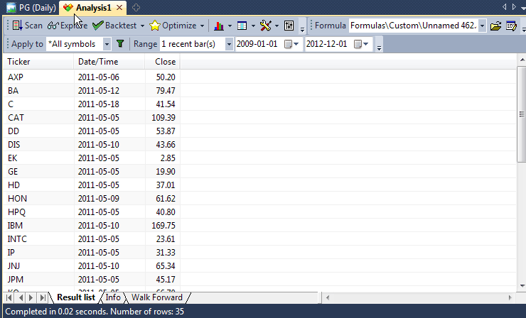
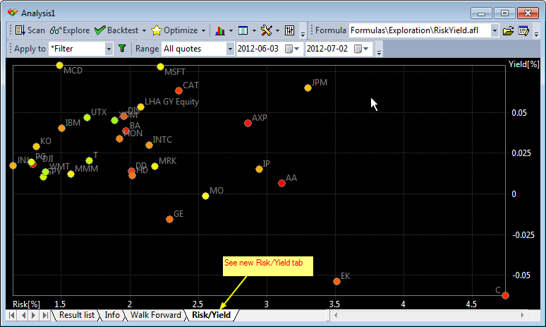

One of the most useful features of the Analysis window is called "Exploration". Basically, an exploration works in a similar way to Scan, but instead of looking for and reporting just buy/sell signals, it allows you to generate a customizable screening (or exploration) report that can give you much more information than a simple Scan.
The idea behind an exploration is simple - one variable, called filter, controls which symbols/quotes are accepted. If "true" (or 1) is assigned to that variable for a given symbol/quote, it will be displayed in the report.
So, for example, the following formula will accept all symbols with closing prices greater than 50 :
filter = close > 50;
(NOTE: To create a new formula, please open Formula Editor using Analysis->Formula Editor menu, type the formula and choose Tools->Send to Analysis menu in **the** Formula editor)
|
Note that exploration uses all range and filter settings that are also used by back-tester and scanning modes, so you can get multiple signals (report lines) if you select "All quotations" range. To check just the most recent quote, you should choose "1 recent bar(s)" Now, what about customizable reports? Yes, exploration mode allows you to create and then export a report with completely customizable columns, and it is quite simple to do. All you have to do is to tell AmiBroker what columns you want. This can be done by calling the AddColumn function in your exploration formula:
|
The first argument of **the** AddColumn function is the data **array** you want to display; the second argument defines the column caption
If you now press "Explore" button in the Analysis window, you will get the result similar to this:

Note that there are actually 3 columns: predefined Ticker and Date/Time column and one custom column holding close price. Note that only tickers with a closing price greater than 50 are reported.
Now you can click "Export" and your exploration will be saved to a CSV (comma separated values) file that could be easily loaded **into** any other program, including Excel, for further analysis.
Actually, **the** AddColumn function accepts more arguments to allow you to customize the output even more. The full syntax is:
AddColumn( array, name, format = 1.2, textColor = colorDefault, bkgndColor = colorDefault )
The format parameter allows you to define the formatting applied to numbers. By default, all variables are displayed with 2 decimal digits, but you can change this by assigning a different value to this variable: 1.5 gives 5 decimal digits, 1.0 gives no decimal digits. So, in our example, typing:
AddColumn( Close, "Close", 1.4 );
will give closing prices displayed with 4 decimal digits.
(Note for advanced users: the integer part of this number can
be used to pad a formatted number with spaces - 6.0 will give no decimal digits
but a number space-padded up to 6 characters.)
There are also special format **predefined** constants that allow you to display date/time and single character codes:
AddColumn( DateTime(), "Date / Time", formatDateTime ); Buy=Cross(MACD(),Signal());
Sell=Cross(Signal(), MACD());
Filter=Buy OR Sell;
SetOption("NoDefaultColumns", True );
AddColumn( DateTime(), "Date", formatDateTime );
AddColumn( IIf( Buy, 66, 83 ), "Signal", formatChar );
textColor and bkgndColor arguments allow you to produce colorful reports. By default, **the** result list is displayed using system colors, but you can override this behavior by providing your own colors.
For example, the code that displays **the** close price in green color when the 1-day rate of change is positive, and otherwise uses red color:
AddColumn( Close, "Close", 1.4, IIF( ROC(C, 1 ) > 0, colorGreen,
colorRed ) );
Examples
The exploration mode is **extremely** flexible: you can, for example, export the whole database to a CSV file using the following formula:
filter = 1; /* all symbols and quotes accepted */
AddColumn(Open,"Open",1.4);
AddColumn(High,"High",1.4);
AddColumn(Low,"Low",1.4);
AddColumn(Close,"Close",1.4);
AddColumn(Volume,"Volume",1.0);
This one will show you only heavily traded securities:
filter = volume > 5000000; /* adjust this threshold for your own needs */
AddColumn(Close,"Close",1.4);
AddColumn(Volume,"Volume",1.0);
Or... just show securities with volume 30% above their 40-day exponential average
filter = volume > 1.3 * ema( volume, 40 );
AddColumn(Close,"Close",1.4);
AddColumn(Volume,"Volume",1.0);
With this one, you can export multiple indicator values for further analysis:
filter = close > ma( close, 20 ); /* only stocks trading above its 20 day MA*/
AddColumn( macd(), "MACD", 1.4 );
AddColumn( signal(), "Signal", 1.4 );
AddColumn( adx(), "ADX", 1.4 );
AddColumn( rsi(), "RSI", 1.4 );
AddColumn( roc( close, 15 ), "ROC(15)", 1.4 );
AddColumn( mfi(), "MFI", 1.4 );
AddColumn( obv(), "OBV", 1.4 );
AddColumn( cci(), "CCI", 1.4 );
AddColumn( ultimate(), "Ultimate", 1.4 );
One more example of color output:
Filter =1;
AddColumn( Close, "Close", 1.2 );
AddColumn( MACD(), "MACD", 1.4 , IIf( MACD() > 0, colorGreen, colorRed ) );
AddTextColumn( FullName(), "Full name", 77 , colorDefault, IIf( Close < 10, colorLightBlue, colorDefault ) );
Scatter (X-Y) charts in Exploration
Version 5.60 brings a new feature to exploration - scatter X/Y charts. Scatter charts are useful to display relationships between many symbols, such as correlation, risk, etc. They can be seen as a replacement and upgrade for "Risk/Yield" map that was hard-coded to just one function. Now you can code your own X-Y charts that are not limited to just Risk/Yield maps.
All you need to do to display your own scatter plot is to add XYChartAddPoint to your formula for each X-Y point you want to have on your chart.
For example, you can get a scatter plot of MFE/Profit and MAE/Profit relationships as shown in the description of XYChartAddPoint AFL function.
To display Risk/Yield scatter chart using new functions, follow the steps below.
1. Click File->New->Analysis
2. Pick "Formulas\Exploration\RiskYield.afl" file (listed below)
3. Click on the Explore button in the new Analysis window
4. In the bottom row of tabs, you will see a new "Risk/Yield" tab. Click on it, and you will see the XY chart generated during exploration:

You can hover the mouse over the X-Y chart to read the values. You can also click and drag to mark a rectangle to zoom in. Clicking without marking a rectangle restores full view.
// XY scatter chart example
//
This is AFL equivalent of Risk-Yield
map
// Note that this exploration should be run on
// WEEKLY data
// it calculates average weekly gain (yield)
// and standard deviation of gains (risk)
Filter=Status("lastbarinrange");
Length = SelectedValue( BarIndex()
);
Chg = ROC( C, 1 ); //one
bar yield
yield = MA( Chg, Length
- 1);
risk = StDev(
Chg, Length - 1);
AddColumn(yield,"yield");
AddColumn(risk,"risk");
Clr = ColorHSB( 2 * Status("stocknum")
% 255, 255, 255 );
XYChartAddPoint( "Risk/Yield", Name(),
risk[ Length ], yield[ Length ] , Clr );
XYChartSetAxis("Risk/Yield", "Risk[%]", "Yield[%]");
Final tip
Please don't forget that you can sort the results of the exploration by any column by simply clicking on its header.